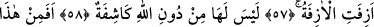
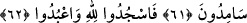
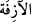
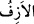
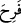
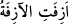
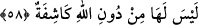

YAKLAŞAN YAKLAŞTI
57. Yaklaşan yaklaştı.
58. Onu (vaktini) Allah’tan başka açığa çıkaracak yoktur.
59. Şimdi siz bu söze (Kur’ân’a) mı şaşıyorsunuz?
60. Gülüyorsunuz da ağlamıyorsunuz!
61. Ve siz gaflet içinde oyalanmaktasınız!
62. Haydi Allah’a secde edip O’na kulluk edin!
Bu âyetin zikrolunanlardan sonra îrâd edilmesi, onların cezâlandırılmalarının Nebi
(s.a.)’e ta’zim dolayısıyla -dünyada da topluca azaba dûçâr olsalar bile- âhirete tehir
edilmiş olduğunu bildirir.
(
)’deki lâm-ı târif, ahd mânâsında olduğundan o getirilmeksizin de bu kelimenin
(kıyâmeti) haber vermesi mümkündür. Şâyet bu lâm-ı târif cins için olsaydı bu doğru
olmazdı. Zira herhangi bir yaklaşıcının yaklaştığı haberi hiç bir fayda temin
etmeyecekti. Eğer sen “Mâlum olan yaklaşıcı’nın (kıyâmetin) yaklaşması bir anlam
ifâde etmez” dersen ben de onun tekid ve uyarının takrir anlamında olduğunu söylerim. (
), kıyâmetin vaktinin yaklaşmasını ifâdede kullanılan “vakit darlığı” mânâsında bir
kelimedir. Bu nedenle kıyâmet vakti, (
) şeklinde de tâbir olunmuştur. “Yolculuk
yaklaştı” ifâdesi de (
) fiiliyle ifâde edilmektedir. Bu fiil (
) gibi olup masdarı (
)
ve (
) şeklinde gelmekte ve yaklaşmayı ve hareket zamanının darlığını ifâde eder.
Kâmûs’ta bu şekilde zikredilmiştir.
Âyetin mânâsı; “Yaklaşacağı tavsif olunan kıyâmet yaklaşmıştır” takdirinde olup “O
saat yaklaştı.” (el-Kamer 54/17) âyeti de bu nev’idendir. Yâni bu âyette de “iftial”
sîgasının mübalağa mânâsı kullanılmak suretiyle o saatin kemâl-i kurbiyyetine delâlet
edilmek istenmiştir. Bununla birlikte (
) âyetinde kurbun mevsûfuna nispet
edilmesiyle o sâatin kemâl-i kurbiyetine de işâret edilmiştir.
58. Onu (vaktini) Allah’tan başka açığa çıkaracak yoktur.